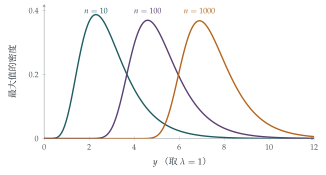

STEP III 2025，第 11 題
繼續之前，請先閱讀題目（原題為英文）。題目載於 OCR 提供下載的 2025 年 STEP 試卷（zip 檔案）內的 STEP III 試卷： www.ocr.org.uk/Images/750486-2025-past-papers.zip
引子
下一個世紀最高的洪水會有多高？一千個燈泡之中，壽命最長的那個能用多久？在 \(n\) 名參賽者之中，跑得最快的馬拉松選手會有多快？這類關於極值（extremes）的問題，即許多隨機數值之中最大或最小的一個，在工程、保險和氣候科學中都極為重要，而極值的表現與平均值截然不同。
本題要找出 \(n\) 個指數分佈（exponential distribution）壽命中最大者的分佈。它的典型大小按 \(\ln n\) 增長，雖然緩慢，卻沒有上限。然而它的離散程度卻完全不會增長：一千個壽命中的最大值，其可預測的程度與十個壽命中的最大值大致相同。在極限情況下，它的分佈形狀就是耿貝爾分佈（Gumbel distribution），也就是極值世界中與正態曲線相對應的角色。
動筆之前
\(X_1, \ldots, X_n\) 中的最大者不超過 \(y\)，恰好等同於發生了甚麼事？
\(Y \leq y\) 恰好在每個 \(X_i \leq y\) 時成立。利用獨立性（independence），這個概率便化為一個乘積。
逐步解題
階段 1 最大值的分佈
每個 \(X_i\) 在 \(y \geq 0\) 時都有 \(\mathrm{F}(y) = 1 - e^{-\lambda y}\)，由獨立性可得 \[\mathrm{G}(y) = \mathrm{P}(X_1 \leq y, \ldots, X_n \leq y) = \bigl(1 - e^{-\lambda y}\bigr)^n. \qed\]
階段 2 分位數
由 \(\mathrm{G}(L) = \alpha\) 解出 \(L\)。然後解 \(\mathrm{G}(U) = 1 - \alpha\)。
由 \(\bigl(1 - e^{-\lambda L}\bigr)^n = \alpha\) 得 \(e^{-\lambda L} = 1 - \alpha^{1/n}\)，所以 \[L(\alpha) = -\frac1\lambda\ln\bigl(1 - \alpha^{1/n}\bigr), \qquad U(\alpha) = -\frac1\lambda\ln\bigl(1 - (1 - \alpha)^{1/n}\bigr). \qed\]
階段 3 \(n\) 很大的情況
把 \(\alpha^{1/n} = e^{(\ln\alpha)/n}\) 寫出來。當 \(n\) 很大時，指數很小。那麼 \(1 - \alpha^{1/n}\) 近似於甚麼？
\(\alpha^{1/n} = e^{(\ln\alpha)/n} \approx 1 + \frac{\ln\alpha}{n}\)，所以 \(1 - \alpha^{1/n} \approx \frac{-\ln\alpha}{n} = \frac{\ln(1/\alpha)}{n}\)。因此 \[\lambda L(\alpha) \approx -\ln\frac{\ln(1/\alpha)}{n} = \ln n - \ln\Bigl(\ln\frac1\alpha\Bigr). \qed\] 同理，\(\lambda U(\alpha) \approx \ln n - \ln\bigl(\ln\frac{1}{1 - \alpha}\bigr)\)。
階段 4 增長與離散程度
中位數（median）是 \(L(\frac12)\)，而 \(\lambda L(\frac12) \approx \ln n - \ln\ln2 \to \infty\)。但是 \[\lambda\bigl(U(\alpha) - L(\alpha)\bigr) \approx \ln\Bigl(\ln\frac1\alpha\Bigr) - \ln\Bigl(\ln\frac{1}{1 - \alpha}\Bigr),\] 當中的 \(\ln n\) 項已互相抵消：區間的闊度與 \(n\) 無關。■
階段 5 一個 \(90\%\) 區間
取 \(\alpha = 0.05\)。\(\ln\frac1\alpha = \ln 20\) 和 \(\ln\frac{1}{0.95}\) 大約是多少？
當 \(\alpha = 0.05\) 時，\(\ln20 \approx 3\)，所以 \(\ln\ln\frac1\alpha \approx \ln3\)。另外 \(\ln\frac{1}{0.95} = -\ln(1 - 0.05) \approx 0.05 = \frac{1}{20}\)，所以 \(\ln\ln\frac{1}{1 - \alpha} \approx \ln\frac{1}{20} \approx -3\)。因此闊度約為 \(\frac1\lambda(\ln3 + 3) \approx \frac{4.1}{\lambda}\)，而 \(Y\) 以概率 \(0.9\) 落在 \([L(0.05), U(0.05)]\) 之內，這個區間的闊度約為 \(4\lambda^{-1}\)。■

回顧
所有值都不超過 \(y\) 時，最大值亦然。獨立性使最大值的分佈函數成為一個冪。
以反函數求分位數。解 \(\mathrm{G}(y) = \alpha\) 便得出區間兩端的精確公式。
先近似，再比較。\(L\) 和 \(U\) 的近似式都含有 \(\ln n\)，在計算闊度時互相抵消。
背後的數學
耿貝爾分佈
由於 \(\mathrm{P}(\lambda Y - \ln n \leq x) = \bigl(1 - \frac{e^{-x}}{n}\bigr)^n \to \exp(-e^{-x})\)，平移後的最大值 \(\lambda Y - \ln n\) 在極限下服從耿貝爾分佈，其分佈函數（distribution function）為 \(\exp(-e^{-x})\)。它的平均值是歐拉常數（Euler’s constant）\(\gamma \approx 0.577\)。你其實早已遇過它：集齊全部 \(n\) 款優惠券所需的時間（第 9.11 節）就是 \(n\) 個（接近獨立的）等待時間中的最大值，這正是它約為 \(n\ln n + \gamma n\) 的原因，而其波動屬耿貝爾型，數量級為 \(n\)。
極值理論
費雪（Fisher）、Tippett 和格涅堅科（Gnedenko）有一個非凡的定理（1928–1943）：許多獨立同分佈（independent identically distributed）的變量，其最大值經適當平移和縮放後，極限形狀只可能有三種：耿貝爾型（適用於輕尾分佈，例如指數分佈或正態分佈）、弗雷歇（Fréchet）型（適用於重尾分佈，例如柯西（Cauchy）分佈）和韋布爾（Weibull）型（適用於有硬性上限的變量）。這是中心極限定理（central limit theorem）（第 12.24 節）在極值方面的對應結果，所屬的學問稱為極值理論（extreme value theory）。工程師用它來設計防洪設施和海上平台，以抵禦「百年一遇的巨浪」；保險公司用它為巨災保障定價；氣候科學家則用它來估計熱浪正在怎樣變化。
Emil Julius Gumbel（耿貝爾）是德國統計學家，直言不諱地反對納粹，1932 年被迫離開大學教席，最終逃往美國。他在 1930 和 1940 年代把極值理論應用於河流氾濫的研究。他的著作 Statistics of Extremes（1958）使這門學問成為實用的工具。荷蘭的三角洲工程（Delta Works）是在 1953 年北海洪災之後為保護荷蘭而興建的，設計時就運用了極值統計學，以抵禦預計約 \(10\,000\) 年一遇的風暴潮。
思維技巧
對於獨立變量的最大值，\(\mathrm{P}(\max \leq y) = \prod\mathrm{P}(X_i \leq y)\)；對於最小值，\(\mathrm{P}(\min > y) = \prod\mathrm{P}(X_i > y)\)。
這一個想法就能處理最近的超級市場（第 12.19 節）、第一班巴士（第 12.18 節）和壽命最長的燈泡。在大學裏，它是次序統計量（order statistics）和極值理論的起點。
延伸練習
最大值的期望值。證明 \(\mathrm{E}(Y) = \frac1\lambda\bigl(1 + \frac12 + \cdots + \frac1n\bigr)\)。（提示：根據無記憶性（memorylessness），\(n\) 個壽命中的第一個結束之後，餘下的 \(n - 1\) 個會重新開始。）
最小值。證明 \(X_1, \ldots, X_n\) 中的最小者服從參數為 \(n\lambda\) 的指數分佈。
中位數的精確值。求 \(Y\) 的精確中位數，並在 \(n = 10\) 時與近似值 \(\frac1\lambda(\ln n - \ln\ln2)\) 比較。
均勻分佈的最大值。若 \(X_1, \ldots, X_n\) 在 \([0, 1]\) 上均勻分佈（uniform），求它們的最大值 \(M\) 的分佈，並證明當 \(n\) 很大時，\(n(1 - M)\) 近似服從指數分佈。這屬於三種極值形狀中的哪一種？
延伸閱讀
Stuart Coles, An Introduction to Statistical Modeling of Extreme Values（Springer）。標準的入門書，附有洪水和海平面的真實數據。
Emil Julius Gumbel, Statistics of Extremes（Dover）。經典之作。
David Spiegelhalter, The Art of Uncertainty（Pelican），談罕見事件以及應該怎樣思考它們。